Note: This is a modified excerpt from our original JSB paper describing EMAN. This version will be kept up to date, since some of the details of the CTF correction method will be improved over time. There are also a few minor corrections to the published version. The equations are mostly inserted as pictures, please excuse their appearance. Not all browsers will support the symbol font correctly, so in some cases the symbol has been replaced with its name, eg 'theta'
Another Note: If you want a little more mathematical detail than this page contains we have published a more detailed paper on this topic. Just email me (sludtke@bcm.tmc.edu ) if you'd like a reprint of this.As of version 1.4, EMAN supports a feature for applying a known 1D structure factor combined with a simple Gaussian low-pass filter to the 3D model after each iteration. This option can produce very nice final results in many cases when used with caution. In other cases it can cause power transfer between radial azimuthal directions. It is generally safe to use this option on the final model, or for the last 1-2 iterations of refinement.
Since the structure factor is only 1D, this really just amounts to a 'perfect' CTF amplitude correction. This option is embodied in the 'setsf=' option to the refine command (and a similar option in proc3d). This option can be used either in conjuntion with EMAN's normal amplitude correction (in which case the SNR weighted averaging of particles will still occur properly), or without it, in which case the (phase-flipped) data is not corrected during averaging, but the final model is corrected using the known 1-D structure facotr.
To use this new technique, you must have a fairly accurate 1D structure factor. Ideally this is obtained from an x-ray solution scattering experiment on a small angle scattering beamline. However, there are techniques that can be used to hybridize information from CTFIT at low resolution with a canonical high resolution structure factor to produce a reasonably good 1D structure factor. Whether you trust these hybrid structure factors enough to use for a reconstruction, is an individual decision. In addition, it requires some amount of special training to understand how to create one of these curves properly. Nonetheless, it does offer the possibility of improved model quality and/or resolution.
One final note, as of this writing, it is NOT possible to create a reasonable structure factor from a PDB model. Solvation effects have a substantial impact on the shape of this curve, and a PDB structure without a very accurate buffer simulation will not properly correct an EM map. In some cases such data can be used reasonably well for CTF parameter determination, but there is no technique I am currently aware of that will generate a properly solvated 1D structure factor from a PDB model. The 'crysol' program has proven to be inadequate for this task.
The goal of single particle reconstruction is to regenerate the correct three-dimensional structure of a molecule based on two-dimensional projections of the molecule. Unfortunately, the images generated by electron microscopes are not true projections of the specimen. They suffer from a set of artifacts including the CTF and the envelope function of the microscope . In addition, noise is present from a variety of sources. If we assume astigmatism and drift are negligible, these effects are all isotropic. The CTF in particular can cause serious artifacts in a 3D reconstruction. Without CTF correction, the model produced by a reconstruction will often bear only a vague resemblance to the true structure. The high resolution structure will generally be severely distorted. The severity and type of these effects, of course, depends on many factors, the most significant of which is the defocus of the data used in the reconstruction. Nonetheless, if a reconstruction which is truly representative of the real structure is desired, CTF correction is crucial.
CTF correction has been routine in electron crystallography and helical reconstructions for some time , but it is only now becoming widespread in single particle work. This is principally due to the difficulty in performing this correction on non crystallographic data. Several groups have proposed and/or performed CTF correction on single particle data to various degrees in the past , but it remains difficult to generate a CTF corrected structure with existing software.
CTF correction can be performed with varying degrees of completeness, ranging from simple truncation of the data at the first zero crossing of the CTF to complete amplitude and phase correction performed simultaneously on multiple data sets. The EMAN reconstruction procedure incorporates complete CTF amplitude and phase correction which is nearly fully automated. A graphical utility, ctfit, allows the user to determine the CTF parameters for the particles in each micrograph. Multiple micrographs with a range of defocus values should be used to sample Fourier space as uniformly as possible. Ctfit stores the CTF parameters in the header of each particle and performs phase correction. The complete set of particles from the entire set of micrographs is then combined into a single file for reconstruction. CTF amplitude correction is then performed transparently as part of the reconstruction procedure. To provide a complete description of how EMAN performs CTF correction the mathematical methodology will be discussed in some detail.
The envelope function and CTF are best examined in Fourier space. At this point in the discussion, we will ignore the effects of drift and astigmatism, which cause asymmetries in the CTF and envelope functions. The Fourier transform of the true 3D structure of the molecule is called the structure factor of the molecule, 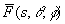 , where the overbar indicates a complex valued function. As discussed earlier, in Fourier space, a projection of the 3D structure is represented by a slice passing through the origin in Fourier space. This means CTF and envelope functions which are circularly symmetric in the images are also spherically symmetric when extended to 3D. This is a crucial point if we wish to correct for the CTF during a reconstruction. The final goal of the reconstruction is to produce . The data measured in a transmission electron microscope can be described by:
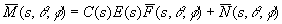 ,
where 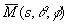 is the measured data, C(s) is the CTF, E(s) is the envelope function, and 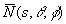 represents random noise with a consistent spectral amplitude profile. If we wish to obtain , we must first know C(s) and E(s). cannot be subtracted directly, since all we know is its mean intensity. We rely on averaging to reduce the mean noise level, which we monitor by examining the signal to noise ratio as the reconstruction progresses. To determine C(s) and E(s), it is more convenient to examine the rotationally averaged power spectra:
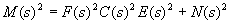 ,
where N(s)2 is the mean noise intensity and F(s) is the one-dimensional structure factor of the molecule. To perform the 3D correction, we must determine C(s) and E(s) for each micrograph. To properly weight the data between micrographs, we must also know N(s) .
We know M(s) for each micrograph, but F(s), C(s), E(s) and N(s) appear to be completely undetermined. Luckily, this is not the case. C(s), E(s) and N(s) can all be parameterized based on theoretical or empirical models as shown below. In two-dimensional crystals or helical arrays, N(s) can be determined independently by examining the background between the crystallographic peaks or layer lines. In single particle processing, we do not have this luxury. However, since C(s) varies sinusoidally, information about N(s) can be obtained from the zero crossings of C(s). Even with this fact, the overall fitting problem is impossible for a single data set without first determining F(s).
The functional forms used for C(s), E(s) and N(s) are:
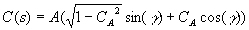 , where 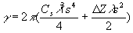
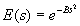
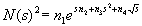
This gives a total of eight parameters used for fitting: A, CA, Z, B, and n1-4. The model for N(s) is completely empirical, and encompasses a wide range of different physical effects, including incoherent scattering, film noise and scanner noise. It has worked well with data from four different microscopes (JEOL 1200EX, 4000EX, 2010F, and 3000SFF), but could potentially require modification for other microscopes. In particular, we anticipate microscopes with energy filters to produce a substantially different noise distribution. C(s) is provided by the well-known weak phase approximation with amplitude contrast corrections . A five term theoretical expression exists for E(s) , containing several different functional forms. In practice, however, a simple Gaussian is experimentally indistinguishable from this aggregate expression in most cases. It is also worth noting that there are no parameters to compensate for astigmatism. Ctfit is capable of measuring astigmatism angle and defocus difference, but no corrections are presently made for this. As single particle reconstructions approach atomic resolution, however, the astigmatism present even in excellent micrographs may become significant. EMAN can be modified to compensate for this, but a considerable speed penalty would be imposed. In addition, specimen charging will induce apparent defocus changes and astigmatism within a single micrograph, and beam tilt will cause resolution dependent phase shifts. These effects are ignored at present, beyond avoiding particles in micrograph areas with obvious charging.
As mentioned above, before C(s), E(s) and N(s) can be determined accurately from individual micrographs, we must determine F(s). Once this has been accomplished, parameter determination becomes a straightforward fitting problem. We will discuss three methods for determining F(s). The first method is to perform a solution x-ray scattering experiment on the macromolecule under study . This provides an isotropically averaged structure factor that will be nearly identical to F(s) above. There may be discrepancies due to the differences in x-ray and electron scattering cross-sections for specific charge distributions . In addition, the solution scattering experiment will provide a structure factor which is completely isotropic. If the orientations of the single particles in the electron cryomicroscopy experiment are not distributed uniformly, the structure factors may contain noticeable differences. Even in this case, however, the structure factor will generally be sufficient to determine C(s), E(s) and N(s).
The second method for determining F(s) is to take one or more micrographs of the sample in ice deposited on a layer of continuous carbon. By boxing out areas of the micrograph containing only continuous carbon, the CTF parameters can be determined directly by assuming a structure factor for the carbon film (approximated as a constant for low to intermediate resolutions). These parameters can then be used to determine the structure factor of the macromolecule in the same micrograph. That is, we determine C(s) and E(s) from the carbon film alone, then use these parameters with the macromolecule data in the same micrograph to determine F(s) of the macromolecule. Of course, this F(s) will be very inaccurate near the zeros of the CTF in an individual micrograph, so an average F(s) must be determined by combining the information from several micrographs at different defocus settings.
The final method for determining F(s) is the most general, and requires no additional data collection, but is the most difficult to implement. F(s) is a function solely of the macromolecule being studied. That is, it is the portion of the data that is constant when microscope parameters such as defocus are varied. When data taken at multiple defocuses is fit simultaneously, this fact provides an additional constraint, which makes the fit feasible. As long as the distribution of particle orientations remains fairly consistent, any micrographs of the same protein will do. In the most general case, this would still be an underdetermined fitting problem. However, the oscillatory nature of the CTF combined with a monotonically decreasing envelope function provides the necessary additional constraints to make the fitting problem converge. After the fit has been performed once, with several micrographs, the resulting F(s) can be used to determine C(s) , E(s) and N(s) for any number of additional micrographs. While relative amplitudes and B-factors can be determined, there is always an arbitrary overall scaling factor and an arbitrary overall B-factor which cannot be determined without a known reference. Currently this technique requires some manual fitting to be performed, but a fully automated solution may be possible. Despite the difficulties, we have successfully applied this method to several problems in which results from one of the other methods was also available, and the F(s) determined by the two methods matched extremely well. All three of these methods have been successfully applied to determine the structure factor of at least one macromolecule (manuscripts in preparation).
Once the parameters have been determined, the actual CTF correction is performed when aligned 2D single particle images are averaged to generate a class average. The averaging is performed in Fourier space. The basic method is to perform a weighted average of the images, where the weights vary with spatial frequency. We wish to choose the weights such that data is used optimally, that is, the signal to noise ratio is maximized in the final average image at all spatial frequencies. The parameters for C(s) , E(s) and N(s) provide a measure of signal to noise ratio as a function of spatial frequency for each individual particle. Since F(s) is the same in all of the data for a given particle, we can eliminate it and define the relative signal to noise ratio for each particle as: 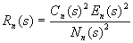 , where the subscript, n, denotes particle number. To simplify the expression, we assume that Nn(s) is approximately the same between exposures. The solution where Nn(s) is allowed to vary is somewhat more complex, but is easily derived. Note that some inaccuracy in N n(s) will not have a significant effect on the accuracy of the results, it will simply cause slight over or under-weighting of certain particles. In practice, this effect is negligible for data collected on a single microscope. The final image is expressed as a simple linear combination of the individual aligned images:
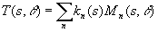 ,
where s and theta represent polar coordinates in Fourier space, and kn(s) are the weighting coefficients to be determined.
(a correction to the text of the paper was made here, the paper contained an incorrect equation resulting from over-simplifying)
We wish to determine kn(s) such that the signal to noise ratio in the final image is maximized at all s with the additional constraint that 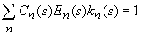 at all s and that the CTF and envelope functions are corrected. The result of this maximization is:
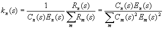 .
That is, for an optimal class average, the weighting coefficients, k, are proportional to Rn(s), the relative signal to noise ratio within each image. This methodology makes optimal use of the available information in all of the images. When an image contains no information at a particular spatial frequency, it does not contribute to the final image. In addition, this technique is relatively insensitive to small inaccuracies in the CTF model and/or parameters. The typical effect of fitting inaccuracies would be slightly over/under-weighting a particular image when averaging. Since the images all represent the same structure factor, this simply causes a slight reduction in the statistical sampling of the result.
The correction technique above makes a few assumptions which are not necessarily correct. The main problem is the assumption that the final signal to noise ratio in the averaged image will be larger than 1. While this is certainly true at low resolution, near the resolution limit of the reconstruction, clearly this value will fall well below 1. This results in an unpleasent textured appearance in the class averages. If you're filtering properly, most of these artifacts will be eliminated in the final model, but nonetheless this can cause reconstruction problems.
To get around this problem, we can incorporate a Wiener filter into the correction equations. However, for accurate Wiener filtration, we require an accurate measure of the spectral signal to noise ratio in the final averaged image. Then the following filter is applied: S/(S+N), where S is the signal intensity and N is the noise intensity. Unfortunately, the relative SNR measure used in the corrections above is not sufficient in this case. We must have an absolute measure of the spectral SNR. To accomplish this, the CTF parameter determination must have been performed using an x-ray scattering curve (or a pseudo-scattering curve approximated through other means). This curve combined with the CTF parameters allows a very accurate estimate of the SNR in a class average to be made, and a nearly optimal Wiener filter can be applied.
One additional affect, which is not presently accounted for, is that the Wiener filter is applied to the class-averages, not the 3D model. When the class-averages are combined to form a 3D model, the additional averaging that occurs will lead to higher SNR's than were present in the 2D class-averages. That means the Wiener filter we applied will actually somewhat over-filter the 3D model. However, this effect is not as severe as it appears. The amount of averaging is much greater at lower frequencies, where the SNR is generally much greater than 1, and hence the Wiener filter is doing virtually nothing. Assuming the near-optimal number of class-averages is used, the amount of averaging near the resolution limit is much lower, and hence the Wiener filter is closer to being accurate. It is possible to correct for this effect, but it requires considerable bookkeeping. Expect some minor improvements in the next version of EMAN.